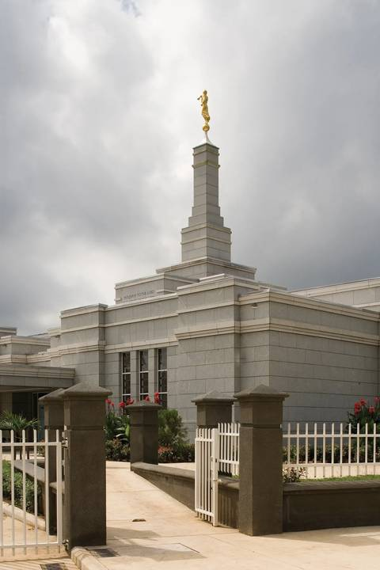
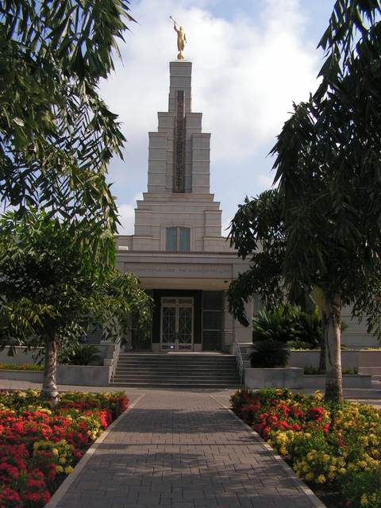
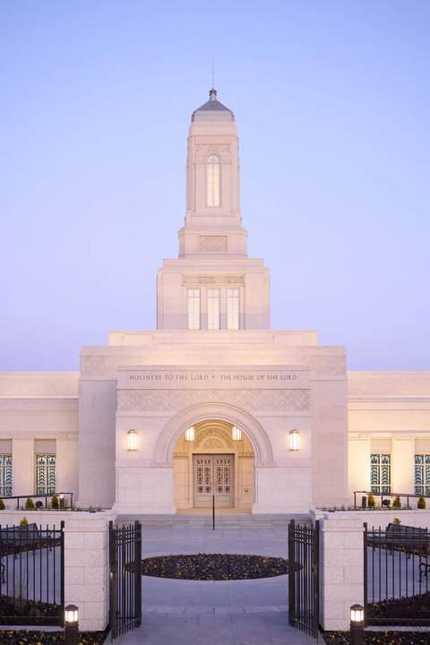
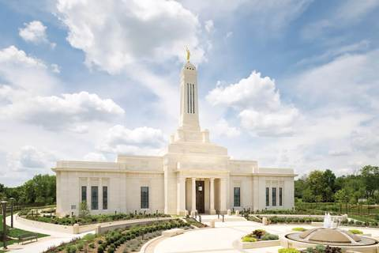

Houses of the Lord
A small collection of temples I hope to visit someday, gathered here as I practice building a responsive photo album.




A small collection of temples I hope to visit someday, gathered here as I practice building a responsive photo album.



